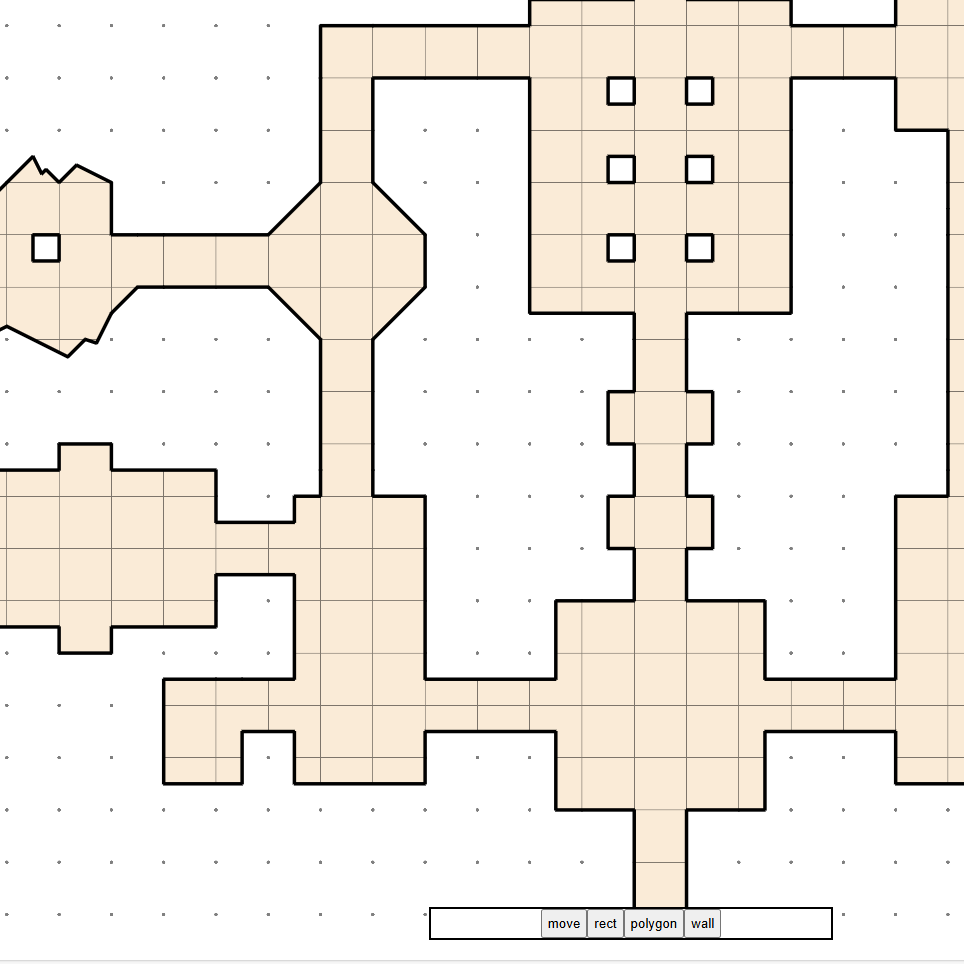
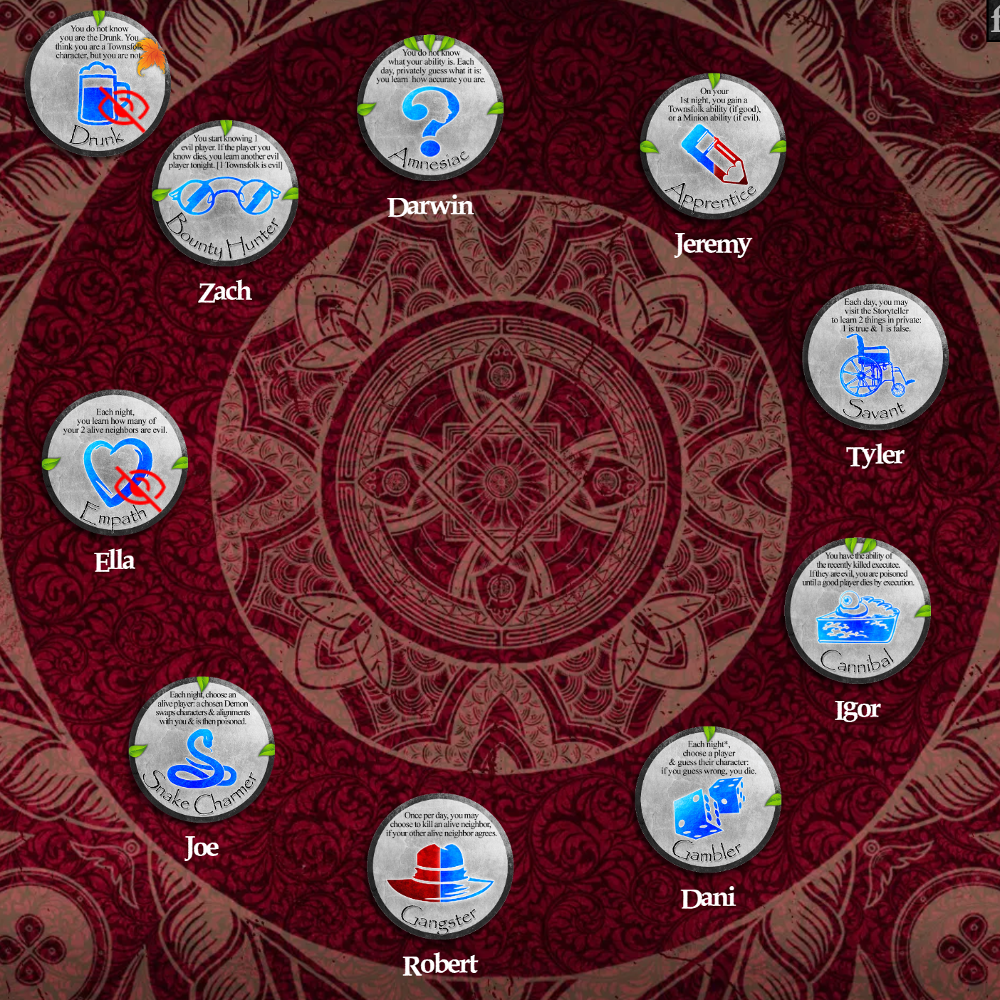
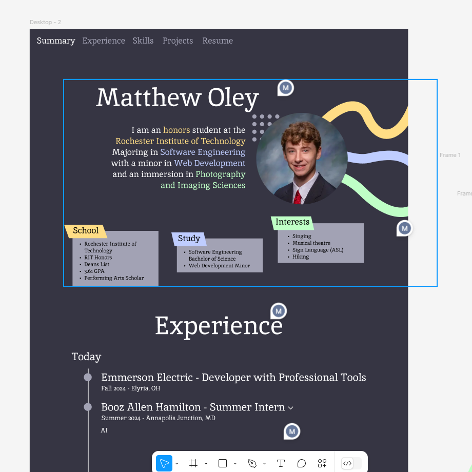

Matthew Oley
I am an honors student at the Rochester Institute of Technology majoring in Software Engineering with a minor in Web Development and an immersion in Photography and Imaging SciencesSchool
- Rochester Institute of Technology
- RIT Honors
- Dean's List
- 3.67 GPA
- Performing Arts Scholor
Study
- Software Engineering Bachelor of Science
- Web Development Minor
Interests
- Singing
- Musical Theatre
- Sign Language (ASL)
- Backpacking
Experience
-
Emerson Electric - Software Development Co-Op
Fall 2024 - Elyria, OH- Developed and unit tested development tasks.
- Participated in requirements gathering and breakdown sessions with marketing and development teams.
- Brought website pages into compliance with modern web standards and ADA compliance.
-
Booz Allen Hamilton - Software Engineer
Summer 2024 - Annapolis Junction, MD- Developed a machine-learning-driven audio processing and analysis platform for acoustic keylogging.
- Designed and implemented responsive mobile-first user interface.
- Leveraged automated testing, CI/CD, and containerization to engineer performant and maintainable code.
- Presented capability to company executives.
-
NTID Department of Performing Arts - Carpenter / Electrician
Spring 2023 - Rochester, NY- Worked in National Technical Institute for the Deaf Performing Arts wood shop after completing theatre practicum course.
- Coordinated with both hearing and deaf co-workers in sign language.
- Assisted senior lighting and sound designers in multiple theatre productions.
-
Dallas School District - Technology Aide
May 2021 - Dallas, PA- Prepared hardware for student and teacher use and solved connection and technology issues.
- Configured network connections for security system.
- Recorded instructional videos on use of hardware for faculty and staff.
- Managed small groups of aides through completion of IT projects.
Projects
-

Twilight
A Dungeons and Dragons map creation tool that enables a user to occlude parts of the map during gameplay. Made with Angular 18.2. -

Online Grimoire
Web tool to emulate the game board of the social deduction game Blood on the Clocktower. Built using vanilla JavaScript and CSS. -

Personal Website
Website written in vanilla HTML, JavaScript, and CSS. Used to promote myself and showcase my experience and projects.